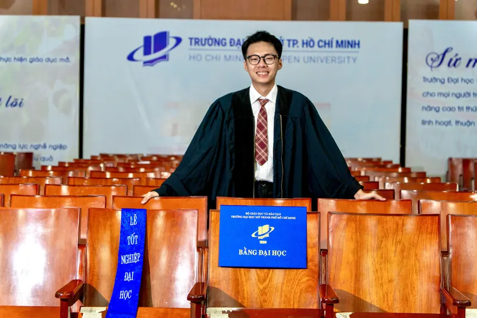
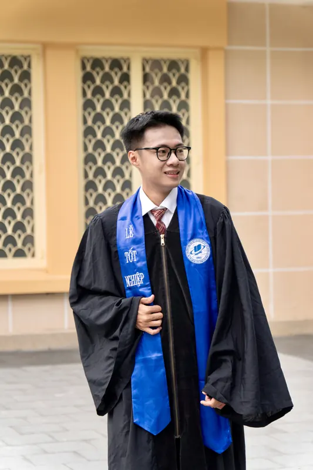
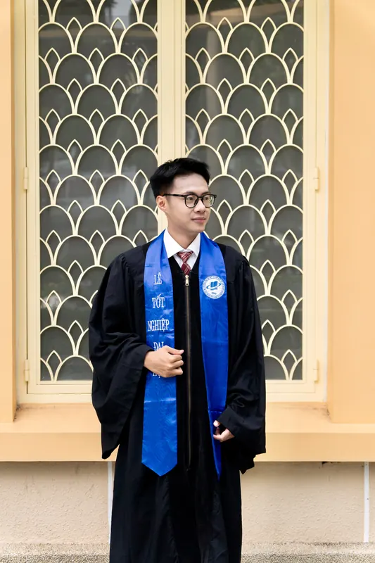
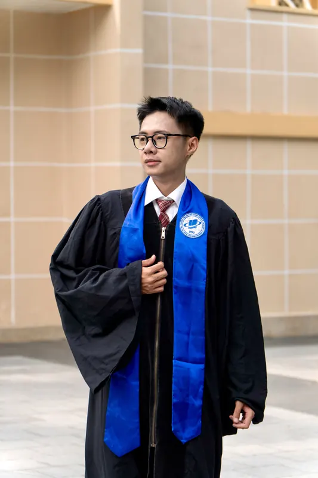

Có thể gửi xe tại Trường, nhưng vào ngày lễ khu vực gửi xe có thể sẽ hết chỗ sớm. Tú gợi ý một số điểm gửi xe gần trường nha:
1. Du lịch Hòa Bình (Số 60 Võ Văn Tần)[ Bản đồ ]Dễ tìm, nằm ngay trục đường chính
2. Tòa nhà Báo Người Lao Động (Số 123 Võ Văn Tần)[ Bản đồ ]Thuận tiện nếu đi từ hướng đường CMT8
3. Bãi giữ xe Công viên Tao Đàn[ Bản đồ ]Ngay ngã tư Trương Định và Nguyễn Thị Minh Khai
Vợ Park Bo Gum: Chúc mừng Tú đã xuất sắc hoàn thành chặng đường đại học! 🎓✨
Tấm bằng tốt nghiệp này chính là trái ngọt cho những đêm thức trắng và mọi nỗ lực không ngừng nghỉ, chúc Tú sẽ luôn giữ vững nhiệt huyết, tự tin vững bước trên con đường sự nghiệp sắp tới Anh Khôi: Chúc Tú sẽ thành công rực rỡ trên hành trình sắp tới! Rất hân hạnh được đồng hành, chạy deadline cùng Tú trên hành trình đại học này nhé. ng lạ: Mừng cho anh <3 Bạn Thờ Ư Thư: Chúc mừng Tú tốt nghiệp, chúc Tú thành công trên con đường sắp tời và hạnh phúc trên con đường Tú đã chọn🤗 Nguyên Hưn: Đây là sự hoàn hảo tuyệt đối, là thành công của tạo hoá, là món quà duy nhất của Chúa, là thiên thần được gửi xuống thế gian thắp sáng cuộc đời của tôi, là kì quan vĩ đại nhất thế giới, là kiệt tác để đời của thần linh, là tuyệt phẩm nhân loại, là đấng sáng tạo vũ trụ Em Quang Trường: chúc mừng anh tốt nghiệp! Ăn lẩu bò thoaiiiiii Anh Chất: Chúc mừng người bạn đại học đầu tiên của tui! Chúc ông hành trình sắp tới luôn rực rỡ, vạn sự hanh thông và gặt hái nhiều thành công nhá🧑🎓🍀💐💐💐🎉🎉 Huy Ngày Xưa: 15 năm rồi Sumin nhỉ, chứng kiến ông đi qua từng cột mốc, bao nhiêu chông gai mà tụi mình vẫn luôn đồng hành cùng nhau, tui vô cùng trân quý tình bạn này. Chúc Sumin có một sự nghiệp thành công trong tương lai nhé. Congrat 💕 Yến Nhi: Vợ chồng Nhi - Tú sẽ đến ăn mừng cùng Tú nhoé. Chúc mừng Tú đã hoàn thành hành trình 4 năm học tập đầy nỗ lực và đáng nhớ! 🎓 Chúc Tú trên hành trình sắp tới sẽ có thêm những công việc thật ưng ý, gặp được những cơ hội tốt, thăng tiến vèo vèo và luôn gặp nhiều may mắn🥰 Người bí ẩn: em chúc anh sớm có được em như cách anh đã có tấm bằng đó Trine: Tui ngưỡng mộ ông lắm, chúc ông sớm làm chủ. Đám cưới mời tui tui đi 2 cây vàng (hoặc k) Vĩ Khang: tui sẽ với ô làm content tiktok nhóe, lớp Thúy Ngân: ok chúc mừng ông nha Rosé BlackPink: Vậy là đã kết thúc 4 năm chặn đường đại học. Chị chúc Tú thành công trên con đường mà mình đã chọn nhé. Always by your side. Vì có lịch trình world tour chị không thể tham dự được. Hẹn em dịp khác nhé.
이렇게 4년간의 대학 생활이 끝났네요. 칸, 네가 선택한 길에서 성공을 거두길 바란다. 항상 네 곁에 있을게. 월드 투어 일정 때문 Thỏ: Có book make up hôn ib tui Oanh Phạm: tối không có tăng 2 là tui quậy liềnnn Ngọc Thảo: Congratulations to my friend of 10 years on finally graduating ✨✨🤩
From our school days to today, we've been through so many stages of life together. I'm truly proud of you and everything you've worked so hard to achieve.
I hope this is the beginning of a bright and wonderful . Vợ Park Bo Gum: Chúc mừng Tú đã xuất sắc hoàn thành chặng đường đại học! 🎓✨
Tấm bằng tốt nghiệp này chính là trái ngọt cho những đêm thức trắng và mọi nỗ lực không ngừng nghỉ, chúc Tú sẽ luôn giữ vững nhiệt huyết, tự tin vững bước trên con đường sự nghiệp sắp tới Anh Khôi: Chúc Tú sẽ thành công rực rỡ trên hành trình sắp tới! Rất hân hạnh được đồng hành, chạy deadline cùng Tú trên hành trình đại học này nhé. ng lạ: Mừng cho anh <3 Bạn Thờ Ư Thư: Chúc mừng Tú tốt nghiệp, chúc Tú thành công trên con đường sắp tời và hạnh phúc trên con đường Tú đã chọn🤗 Nguyên Hưn: Đây là sự hoàn hảo tuyệt đối, là thành công của tạo hoá, là món quà duy nhất của Chúa, là thiên thần được gửi xuống thế gian thắp sáng cuộc đời của tôi, là kì quan vĩ đại nhất thế giới, là kiệt tác để đời của thần linh, là tuyệt phẩm nhân loại, là đấng sáng tạo vũ trụ Em Quang Trường: chúc mừng anh tốt nghiệp! Ăn lẩu bò thoaiiiiii Anh Chất: Chúc mừng người bạn đại học đầu tiên của tui! Chúc ông hành trình sắp tới luôn rực rỡ, vạn sự hanh thông và gặt hái nhiều thành công nhá🧑🎓🍀💐💐💐🎉🎉 Huy Ngày Xưa: 15 năm rồi Sumin nhỉ, chứng kiến ông đi qua từng cột mốc, bao nhiêu chông gai mà tụi mình vẫn luôn đồng hành cùng nhau, tui vô cùng trân quý tình bạn này. Chúc Sumin có một sự nghiệp thành công trong tương lai nhé. Congrat 💕 Yến Nhi: Vợ chồng Nhi - Tú sẽ đến ăn mừng cùng Tú nhoé. Chúc mừng Tú đã hoàn thành hành trình 4 năm học tập đầy nỗ lực và đáng nhớ! 🎓 Chúc Tú trên hành trình sắp tới sẽ có thêm những công việc thật ưng ý, gặp được những cơ hội tốt, thăng tiến vèo vèo và luôn gặp nhiều may mắn🥰 Người bí ẩn: em chúc anh sớm có được em như cách anh đã có tấm bằng đó Trine: Tui ngưỡng mộ ông lắm, chúc ông sớm làm chủ. Đám cưới mời tui tui đi 2 cây vàng (hoặc k) Vĩ Khang: tui sẽ với ô làm content tiktok nhóe, lớp Thúy Ngân: ok chúc mừng ông nha Rosé BlackPink: Vậy là đã kết thúc 4 năm chặn đường đại học. Chị chúc Tú thành công trên con đường mà mình đã chọn nhé. Always by your side. Vì có lịch trình world tour chị không thể tham dự được. Hẹn em dịp khác nhé.
이렇게 4년간의 대학 생활이 끝났네요. 칸, 네가 선택한 길에서 성공을 거두길 바란다. 항상 네 곁에 있을게. 월드 투어 일정 때문 Thỏ: Có book make up hôn ib tui Oanh Phạm: tối không có tăng 2 là tui quậy liềnnn Ngọc Thảo: Congratulations to my friend of 10 years on finally graduating ✨✨🤩
From our school days to today, we've been through so many stages of life together. I'm truly proud of you and everything you've worked so hard to achieve.
I hope this is the beginning of a bright and wonderful . Vợ Park Bo Gum: Chúc mừng Tú đã xuất sắc hoàn thành chặng đường đại học! 🎓✨
Tấm bằng tốt nghiệp này chính là trái ngọt cho những đêm thức trắng và mọi nỗ lực không ngừng nghỉ, chúc Tú sẽ luôn giữ vững nhiệt huyết, tự tin vững bước trên con đường sự nghiệp sắp tới Anh Khôi: Chúc Tú sẽ thành công rực rỡ trên hành trình sắp tới! Rất hân hạnh được đồng hành, chạy deadline cùng Tú trên hành trình đại học này nhé. ng lạ: Mừng cho anh <3 Bạn Thờ Ư Thư: Chúc mừng Tú tốt nghiệp, chúc Tú thành công trên con đường sắp tời và hạnh phúc trên con đường Tú đã chọn🤗 Nguyên Hưn: Đây là sự hoàn hảo tuyệt đối, là thành công của tạo hoá, là món quà duy nhất của Chúa, là thiên thần được gửi xuống thế gian thắp sáng cuộc đời của tôi, là kì quan vĩ đại nhất thế giới, là kiệt tác để đời của thần linh, là tuyệt phẩm nhân loại, là đấng sáng tạo vũ trụ Em Quang Trường: chúc mừng anh tốt nghiệp! Ăn lẩu bò thoaiiiiii Anh Chất: Chúc mừng người bạn đại học đầu tiên của tui! Chúc ông hành trình sắp tới luôn rực rỡ, vạn sự hanh thông và gặt hái nhiều thành công nhá🧑🎓🍀💐💐💐🎉🎉 Huy Ngày Xưa: 15 năm rồi Sumin nhỉ, chứng kiến ông đi qua từng cột mốc, bao nhiêu chông gai mà tụi mình vẫn luôn đồng hành cùng nhau, tui vô cùng trân quý tình bạn này. Chúc Sumin có một sự nghiệp thành công trong tương lai nhé. Congrat 💕 Yến Nhi: Vợ chồng Nhi - Tú sẽ đến ăn mừng cùng Tú nhoé. Chúc mừng Tú đã hoàn thành hành trình 4 năm học tập đầy nỗ lực và đáng nhớ! 🎓 Chúc Tú trên hành trình sắp tới sẽ có thêm những công việc thật ưng ý, gặp được những cơ hội tốt, thăng tiến vèo vèo và luôn gặp nhiều may mắn🥰 Người bí ẩn: em chúc anh sớm có được em như cách anh đã có tấm bằng đó Trine: Tui ngưỡng mộ ông lắm, chúc ông sớm làm chủ. Đám cưới mời tui tui đi 2 cây vàng (hoặc k) Vĩ Khang: tui sẽ với ô làm content tiktok nhóe, lớp Thúy Ngân: ok chúc mừng ông nha Rosé BlackPink: Vậy là đã kết thúc 4 năm chặn đường đại học. Chị chúc Tú thành công trên con đường mà mình đã chọn nhé. Always by your side. Vì có lịch trình world tour chị không thể tham dự được. Hẹn em dịp khác nhé.
이렇게 4년간의 대학 생활이 끝났네요. 칸, 네가 선택한 길에서 성공을 거두길 바란다. 항상 네 곁에 있을게. 월드 투어 일정 때문 Thỏ: Có book make up hôn ib tui Oanh Phạm: tối không có tăng 2 là tui quậy liềnnn Ngọc Thảo: Congratulations to my friend of 10 years on finally graduating ✨✨🤩
From our school days to today, we've been through so many stages of life together. I'm truly proud of you and everything you've worked so hard to achieve.
I hope this is the beginning of a bright and wonderful . Vợ Park Bo Gum: Chúc mừng Tú đã xuất sắc hoàn thành chặng đường đại học! 🎓✨
Tấm bằng tốt nghiệp này chính là trái ngọt cho những đêm thức trắng và mọi nỗ lực không ngừng nghỉ, chúc Tú sẽ luôn giữ vững nhiệt huyết, tự tin vững bước trên con đường sự nghiệp sắp tới Anh Khôi: Chúc Tú sẽ thành công rực rỡ trên hành trình sắp tới! Rất hân hạnh được đồng hành, chạy deadline cùng Tú trên hành trình đại học này nhé. ng lạ: Mừng cho anh <3 Bạn Thờ Ư Thư: Chúc mừng Tú tốt nghiệp, chúc Tú thành công trên con đường sắp tời và hạnh phúc trên con đường Tú đã chọn🤗 Nguyên Hưn: Đây là sự hoàn hảo tuyệt đối, là thành công của tạo hoá, là món quà duy nhất của Chúa, là thiên thần được gửi xuống thế gian thắp sáng cuộc đời của tôi, là kì quan vĩ đại nhất thế giới, là kiệt tác để đời của thần linh, là tuyệt phẩm nhân loại, là đấng sáng tạo vũ trụ Em Quang Trường: chúc mừng anh tốt nghiệp! Ăn lẩu bò thoaiiiiii Anh Chất: Chúc mừng người bạn đại học đầu tiên của tui! Chúc ông hành trình sắp tới luôn rực rỡ, vạn sự hanh thông và gặt hái nhiều thành công nhá🧑🎓🍀💐💐💐🎉🎉 Huy Ngày Xưa: 15 năm rồi Sumin nhỉ, chứng kiến ông đi qua từng cột mốc, bao nhiêu chông gai mà tụi mình vẫn luôn đồng hành cùng nhau, tui vô cùng trân quý tình bạn này. Chúc Sumin có một sự nghiệp thành công trong tương lai nhé. Congrat 💕 Yến Nhi: Vợ chồng Nhi - Tú sẽ đến ăn mừng cùng Tú nhoé. Chúc mừng Tú đã hoàn thành hành trình 4 năm học tập đầy nỗ lực và đáng nhớ! 🎓 Chúc Tú trên hành trình sắp tới sẽ có thêm những công việc thật ưng ý, gặp được những cơ hội tốt, thăng tiến vèo vèo và luôn gặp nhiều may mắn🥰 Người bí ẩn: em chúc anh sớm có được em như cách anh đã có tấm bằng đó Trine: Tui ngưỡng mộ ông lắm, chúc ông sớm làm chủ. Đám cưới mời tui tui đi 2 cây vàng (hoặc k) Vĩ Khang: tui sẽ với ô làm content tiktok nhóe, lớp Thúy Ngân: ok chúc mừng ông nha Rosé BlackPink: Vậy là đã kết thúc 4 năm chặn đường đại học. Chị chúc Tú thành công trên con đường mà mình đã chọn nhé. Always by your side. Vì có lịch trình world tour chị không thể tham dự được. Hẹn em dịp khác nhé.
이렇게 4년간의 대학 생활이 끝났네요. 칸, 네가 선택한 길에서 성공을 거두길 바란다. 항상 네 곁에 있을게. 월드 투어 일정 때문 Thỏ: Có book make up hôn ib tui Oanh Phạm: tối không có tăng 2 là tui quậy liềnnn Ngọc Thảo: Congratulations to my friend of 10 years on finally graduating ✨✨🤩
From our school days to today, we've been through so many stages of life together. I'm truly proud of you and everything you've worked so hard to achieve.
I hope this is the beginning of a bright and wonderful .
Tú chụp trước vài tấm. Những tấm còn lại chờ Ngọc Tú đó nhaa.




Hẹn gặp Ngọc Tú hôm đó nhé?
Vui lòng xác nhận tham gia để mình đón tiếp cho chu đáo nha.
Sảnh lời chúc
Vợ Park Bo Gum Chúc mừng Tú đã xuất sắc hoàn thành chặng đường đại học! 🎓✨
Tấm…Anh Khôi Chúc Tú sẽ thành công rực rỡ trên hành trình sắp tới! Rất hân hạn…ng lạ Mừng cho anh <3Bạn Thờ Ư Thư Chúc mừng Tú tốt nghiệp, chúc Tú thành công trên con đường sắp…Nguyên Hưn Đây là sự hoàn hảo tuyệt đối, là thành công của tạo hoá, là món quà…Em Quang Trường chúc mừng anh tốt nghiệp! Ăn lẩu bò thoaiiiiiiAnh Chất Chúc mừng người bạn đại học đầu tiên của tui! Chúc ông hành trình sắ…Huy Ngày Xưa 15 năm rồi Sumin nhỉ, chứng kiến ông đi qua từng cột mốc, bao nhiêu…Yến Nhi Vợ chồng Nhi - Tú sẽ đến ăn mừng cùng Tú nhoé. Chúc mừng Tú đã…Người bí ẩn em chúc anh sớm có được em như cách anh đã có tấm bằng đóTrine Tui ngưỡng mộ ông lắm, chúc ông sớm làm chủ. Đám cưới mời tui tui đi…Vĩ Khang tui sẽ với ô làm content tiktok nhóe, lớpThúy Ngân ok chúc mừng ông nhaRosé BlackPink Vậy là đã kết thúc 4 năm chặn đường đại học. Chị chúc Tú thành cô…Thỏ Có book make up hôn ib tuiOanh Phạm tối không có tăng 2 là tui quậy liềnnnNgọc Thảo Congratulations to my friend of 10 years on finally graduating ✨✨🤩…Vợ Park Bo Gum Chúc mừng Tú đã xuất sắc hoàn thành chặng đường đại học! 🎓✨
Tấm…Anh Khôi Chúc Tú sẽ thành công rực rỡ trên hành trình sắp tới! Rất hân hạn…ng lạ Mừng cho anh <3Bạn Thờ Ư Thư Chúc mừng Tú tốt nghiệp, chúc Tú thành công trên con đường sắp…Nguyên Hưn Đây là sự hoàn hảo tuyệt đối, là thành công của tạo hoá, là món quà…Em Quang Trường chúc mừng anh tốt nghiệp! Ăn lẩu bò thoaiiiiiiAnh Chất Chúc mừng người bạn đại học đầu tiên của tui! Chúc ông hành trình sắ…Huy Ngày Xưa 15 năm rồi Sumin nhỉ, chứng kiến ông đi qua từng cột mốc, bao nhiêu…Yến Nhi Vợ chồng Nhi - Tú sẽ đến ăn mừng cùng Tú nhoé. Chúc mừng Tú đã…Người bí ẩn em chúc anh sớm có được em như cách anh đã có tấm bằng đóTrine Tui ngưỡng mộ ông lắm, chúc ông sớm làm chủ. Đám cưới mời tui tui đi…Vĩ Khang tui sẽ với ô làm content tiktok nhóe, lớpThúy Ngân ok chúc mừng ông nhaRosé BlackPink Vậy là đã kết thúc 4 năm chặn đường đại học. Chị chúc Tú thành cô…Thỏ Có book make up hôn ib tuiOanh Phạm tối không có tăng 2 là tui quậy liềnnnNgọc Thảo Congratulations to my friend of 10 years on finally graduating ✨✨🤩…